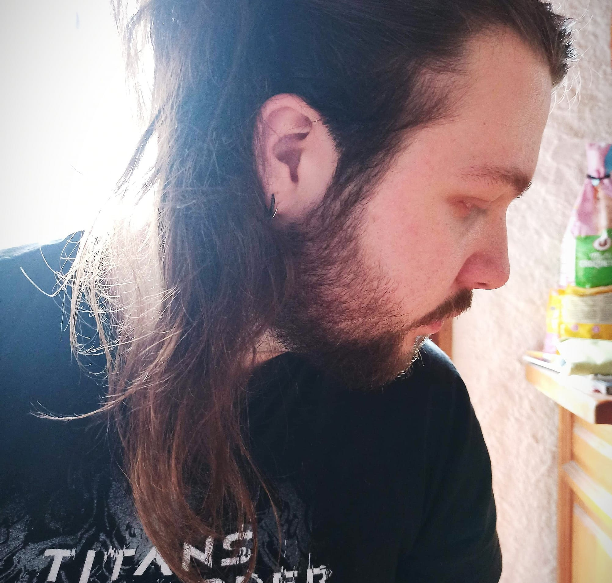

Samuel Strentz

Informations
Adresse
600 Chemin de la Vieille Eglise, 38660, Saint-Vincent-de-Mercuze
Numéro de téléphone
06 69 71 91 18
Adresse mail
samuelstrentzmdl@gmail.com
Permis B
Langues
AnglaisC1
JaponaisB2
AllemandB1
ItalienA2
Loisirs
・ Musique (composition, ingénierie, concert, booking, studio)
・ Lecture (historique, grands personnages de l'histoire de France)
・ Sport (natation, musculation, arts martiaux)
・ Découverte (ville, voyage, gastronomie, vin)
Compétences
Logicielles
・ Suite Microsoft (Word, Excel etc.)
・ Maîtrise de l'ordinateur
・ Programmation (HTML, CSS, JS, PHP)
・ Logiciels de traitement de son et vidéo
・ Articulate Storyline 360
・ Suite Adobe
Sociales
・ Autonomie et rigueur du travail
・ Curiosité et apprentissage efficace
・ Leadership et gestion d'équipe
・ Sociabilité et esprit de cohésion
Auto-formation
・ Formation en HTML
・ Formation en CSS
・ Formation en UX Design et graphisme
・ Formation en utilisation de database
Je suis Samuel Strentz, étudiant en seconde année de master en didactique des langues étrangères et ingénierie pédagogique numérique (DILIPEM) à l'Université Grenoble-Alpes (UGA). Je cherche activement un stage pour mon second semestre, à partir de début Mars, afin de terminer mes études, et dans l'idéal, un futur emploi.
Expérience professionnelle
Ingénieur pédagogique numérique mars 2023 - sept. 2023
THEIA, Grenoble
Stage pour proposer des solutions numériques à des particuliers pour différents types de formations. Animation de webinaires. Ecritures d'articles de blog.
Ingénieur pédagogique numérique sept. 2022 - mars 2023
Interfare - CNRS, Lyon
Concevoir une formation visant à comprendre les mécanismes langagiers et infra-verbaux des réunions en entreprise. Création complète de la formation.
Boulanger déc. 2021 - aujourd'hui
Provencia - Carrefour Market, Crolles
Fabrication du pain frais tous les jours. Anciennement fromager et charcutier dans le même magasin.
Régisseur juil. 2021 - août 2022
Piscine municipale de Saint-Vincent-de-Mercuze, Saint-Vincent-de-Mercuze
Gestion complète de la piscine (entrées, snacking, entretien, comptabilité, commandes, stock, surveillance bassin etc.).
Chercheurmars 2022 - mai 2022
LIDILEM, Université Grenoble-Alpes, Gières
Stage de recherche au laboratoire de la didactique des langues étrangères et maternelles (LIDILEM). Conception d'une plateforme numérique permettant l'exploitation du lexique scientifique transdisciplinaire (LST) sur la base de fonctions rhétoriques pour les étudiants étrangers.
Ingénieur pédagogique et associésept. 2021 - juin 2022
Frantreprise, Université Grenoble-Alpes, Gières
Projet d'une année consistant à établir un parcours de formation du français des affaires pour les étudiants étrangers. Création de l'intégralité du projet, processus didactique, numérisation etc.
Employé polyvalentmai 2017 - oct. 2020
Carrefour Super, Meylan
Gestion de plusieurs rayons (fromagerie, charcuterie, traiteur, rôtisserie, boulangerie, et caisse).
Employé polyvalentjuin 2016 - août 2016
Sun Valley, Sainte-Maxime
Stage en entreprise, de gestion de la vente au détail de prêt-à-porter, et accessoires de mode estivale. Gérer la réception des commandes et la mise en rayon.
Employé polyvalentjuin 2015 - juin 2016
Intersport, Les-Deux-Alpes, Alpes-d'Huez
Stage en entreprise, de gestion de vente au détail de prêt-à-porter, de matériel et de forfaits de location de skis. Gérer la réception des commandes et la mise en rayon.
Employé polyvalentjuin 2014 - juil. 2014
Guitarland, Grenoble
Stage en entreprise, de gestion d'un magasin de musique. Conseiller les clients dans leurs achats. Gérer la réception des commandes et la mise en rayon. Donner des cours de guitare aux élèves. Gérer l'entretien des locaux.
Expérience bénévole
Guitariste, compositeur2021 - aujourd'hui
The French Paradox, La Terrasse
Gérer un groupe de musique semi-professionnel. Assurer la composition des morceaux, des albums, des graphismes, des enregistrements, des répétitions, du booking des concerts et de la trésorerie.
Agriculteurjuin 2021 - juil. 2021
Domaine des Rutissons, Saint-Vincent-de-Mercuze
Travail manuel de la vigne pendant la période estivale, dont la remontée et l'entretien des vignes.
Compositeur gestionnairesept. 2020 - mars 2021
Orbesonge, Bazas
Expérience bénévole dans une association culturelle, à but non-lucratif, sur le thème des rêves lucides. Création d'un album et participation à l'écriture d'un livre augmenté. Gestion de site web et des défis mensuels artistiques.
Administrateur webjan. 2017 - sept. 2020
Guide du Japonais, Paris
Gérer la création de contenus pédagogiques pour apprendre le japonais. Mettre à jour des articles et des leçons. Communiquer avec les utilisateurs et gérer les feedbacks.
Guitariste, compositeursept. 2014 - jan. 2021
Ityllic, Villard-Bonnot
Gérer un groupe de musique semi-professionnel. Assurer la composition des morceaux, des albums, des graphismes, des enregistrements, des répétitions, du booking des concerts et de la trésorerie.
Formation scolaire
Master DILIPEM sept. 2021 - aujourd'hui
Université Grenoble-Alpes, Gières
Parcours de didactique des langues étrangères et ingénierie pédagogique numérique. Spécialité en informatique approfondie et didactique du plurilinguisme.
Licence en LEA Anglais - Japonais sept. 2017 - mai 2021
Université Grenoble-Alpes, Gières
Parcours en langues étrangères appliquées. Obtenue avec mention. Spécialité en management de direction des entreprises, et en italien
Baccalauréat économique et socialsept. 2017 - juin 2021
Lycée Marie Reynoard, Villard-Bonnot
Obtenu avec mention. Spécialité en économie approfondie.